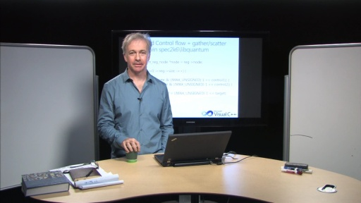

Series - C9 Lectures: Jim Radigan - Inside Auto-Vectorization
Series - C9 Lectures: Jim Radigan - Inside Auto-Vectorization
Auto-vectorization is a powerful compiler feature that ships in Visual Studio 2012. It's the result of outstanding engineering by a few folks on the Microsoft Visual C++ compiler team. It's an…
Jim Radigan: Inside Auto-Vectorization, 1 of n [2012/06/20]The VC++ 2012 auto-vectorizer tries to make loops in your code run faster by automatically vectorizing your code using the SSE instructions available in all current mainline Intel and AMD chip…